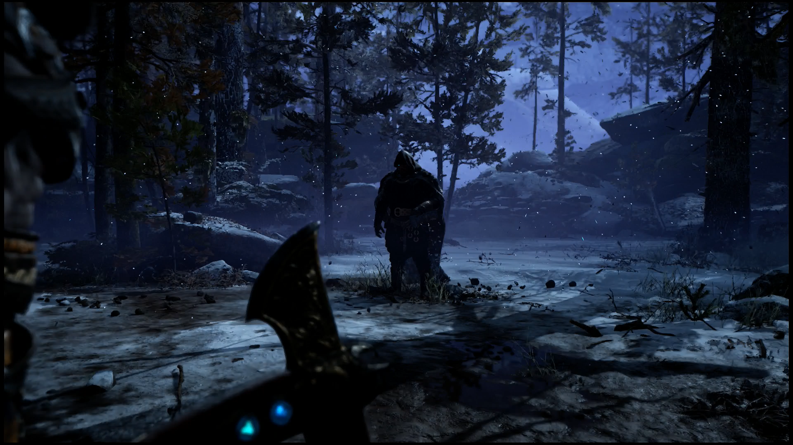

God of War : Ragnarök

"God of War: Ragnarök" is the upcoming sequel to God of War. Although originally showed for a release in 2021, on May 3, 2021, Santa Monica announced it had been delayed to 2022.
Story
Although exact details are unknown, the game will pick up some time after the events of God of War, which saw the beginning of Ragnarök with the death of Magni, Modi and Baldur, with both Freya and Thor seeking revenge against Kratos and Atreus.
characters
- Kratos: The main protagonist of the God of War Series.
- Atreus: Kratos' son from his second marriage.
- Thor: The father of Magni and Modi and the son of Odin.
- Freya: The mother of Baldur and former wife of Odin.
Weapons
- Leviathan Axe: Kratos's primary weapon is a one-handed battle axe with frost magic properties. Leviathan can be immediately recalled by Kratos after being thrown. The axe originally belonged to Faye, a Jötnar and the wife of Kratos and mother of Atreus. The brothers Sindri and Brok crafted the axe long ago.
- Kratos' Fists: Kratos's uses his fists in unarmed combat and can perform multiple hit combos.
- Talon Bow: Atreus' primary weapon is a magical bow and arrows. The bow has the ability to summon spectral animals to perform attacks and assist Kratos in combat.
- Guardian Shield: Kratos has a gauntlet that transforms into a circular shield for parrying blows and wide-ranged attacks. The shield can be used to block attacks, projectiles, and a well-timed block can parry enemies' attacks. The shield can be upgraded to perform powerful slams and area-of-effect attacks.
- Blades of Chaos: Kratos' most vile weapons since his time in the world of Greece, twin chained-blades that possess fire magic properties. Originally given to him by Ares after pledging his loyalty to the God of War and stayed with him even after killing his former master, they can never leave Kratos no matter how much he tries to get rid of them.
Comments